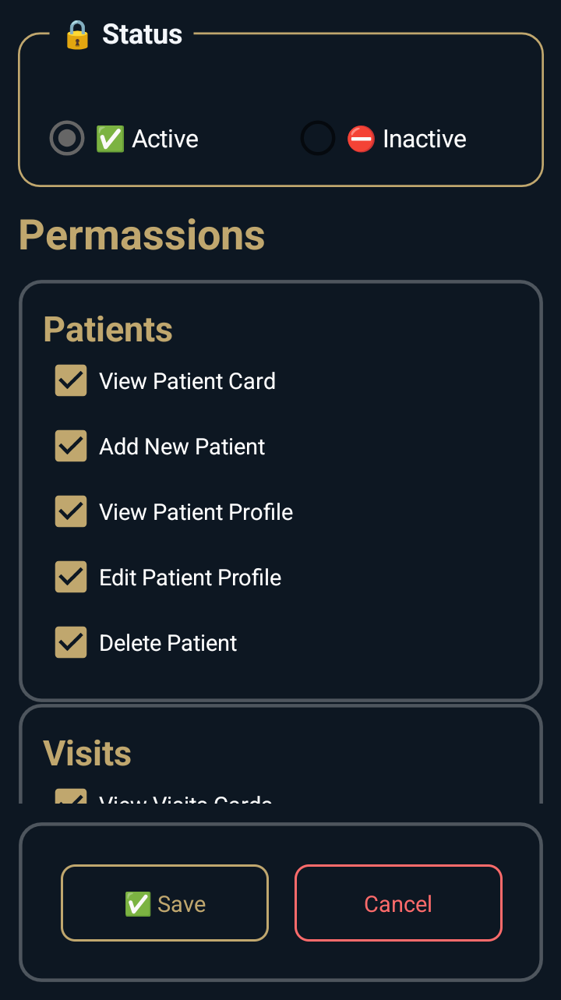

Ürün rehberleri
Klinik iş akışları için ekip izinleri
Klinik ekibi günün farklı işlerine yardımcı olabilir. MedicalSpace, hesap sahibinin her üyenin erişimini gerekli işlere göre değerlendirebilmesi için ayrı izin grupları sunar.
Google Play’den indirin

Ekranı büyütHasta kaydı izinleri
Erişim vermeden önce görevi belirleyin
Üyenin sorumluluklarıyla başlayın. Gösterilen ayarlar hasta kayıtları, ziyaretler, klinik belgeleme ve reçete araçlarını ayırır. Hasta kaydı işlemleri görüntüleme, oluşturma, düzenleme ve silmeyi içerir. Yalnızca rol adına değil, belirli işlem iznine bakın.
Görevler değişince erişimi yeniden inceleyin
Diğer gruplar ziyaret, şikâyet, tanı, plan, not ve reçeteleri kapsar. Kaydetmeden önce üyeyi ve seçilen erişimleri kontrol edin. Görevler değiştiğinde erişimi yeniden değerlendirin. İzinler profesyonel gözetimin veya kliniğin gizlilik süreçlerinin yerine geçmez.
Kullanım adımları
- Üyeyi ve yapması gereken görevleri belirleyin.
- İlgili izin gruplarını ve her yetkili işlemi inceleyin.
- Kaydetmeden önce kontrol edin; sorumluluk değişince erişimi yeniden değerlendirin.
Uygulama içinden
Özgün uygulama görüntüleri. Hasta kayıtları ve klinik konuşma kurgusaldır; özel iletişim bilgileri çıkarılmıştır.
Hasta kaydı izinleri
 Ekranı büyüt
Ekranı büyütZiyaret izinleri
 Ekranı büyüt
Ekranı büyütKlinik belgeleme izinleri
 Ekranı büyüt
Ekranı büyütReçete ve klinik araç izinleri
Bu özellik hakkında sorular
Erişim yalnızca rol adına mı bağlı?
Gösterilen arayüz her iş akışı için daha ayrıntılı izin grupları ve işlemler sunar.
Hangi alanlar gösteriliyor?
Hasta kayıtları, ziyaretler, klinik belgeleme, reçeteler ve ilgili araçlar.
Telefon numarası görünüyor mu?
Hayır. Özel iletişim başlığı yayınlanan görüntülerden çıkarılmıştır. Örnekte görünen ad Hassan Mohamed’dir.